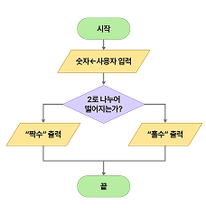
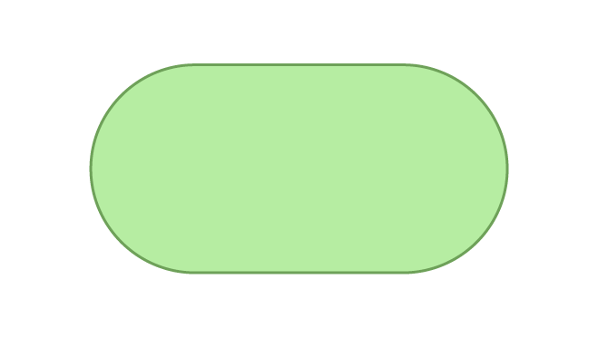
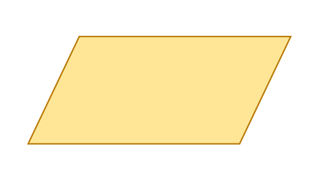
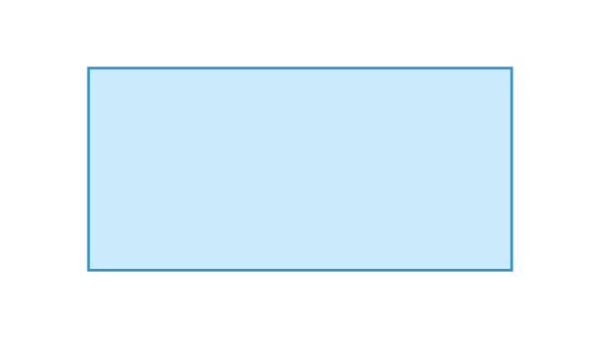
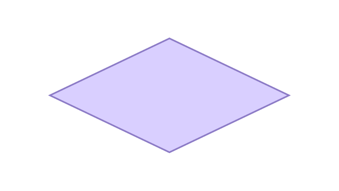
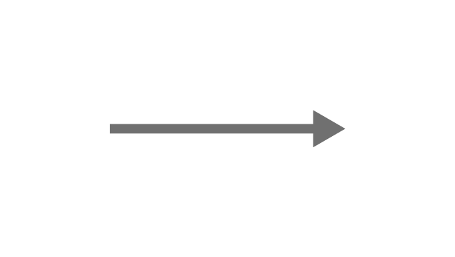

개념 알고 가기
알고리즘의 표현
- 1 알고리즘
- 문제를 해결하기 위한 논리적인 절차와 방법을 의미한다.
- 절차를 나열한 글이나 사전에 약속된 기호 및 도형을 이용하여 표현한다.
- 2 알고리즘의 표현
-
자연어일상적인 언어로 알고리즘을 표현① 숫자를 입력받는다.
② 숫자가 2로 나누어 떨어지면 "짝수"를 출력하고, 그렇지 않으면 "홀수"를 출력한다의사 코드프로그래밍 언어와 유사한 형식으로 표현시작
숫자 ← 사용자 입력
if 숫자가 2로 나누어 떨어지는가?
then "짝수"를 출력
else "홀수"를 출력
끝순서도약속된 기호를 사용하여 알고리즘을 표현
기호와 의미에 대한 표 기호 의미  시작과 끝  입출력  명령어 처리  비교/판단  흐름선
효율적으로 문제를 해결하기 위하여,
문제 해결 절차를 알고리즘으로 표현한다.
문제 해결 절차를 알고리즘으로 표현한다.